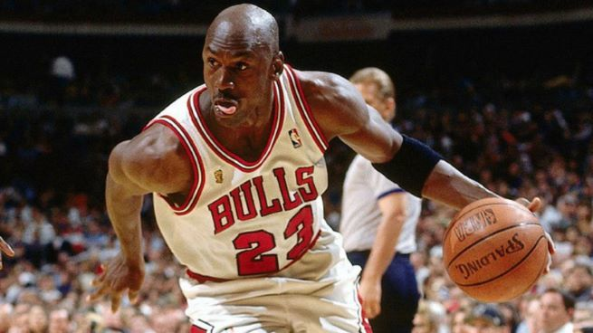

Michael Jordan
Ex-Jogador

Voltar
Michael Jeffrey Jordan (Nova Iorque, 17 de fevereiro de 1963) é um empresário e ex-basquetebolista estadunidense
que atuava como ala-armador. É considerado por muitos como o melhor jogador de basquete de todos os tempos e por
muitos como um dos mais importantes desportistas masculinos da história.[1][2][3] Atualmente é proprietário da
23XI Racing, equipe da NASCAR, onde seus carros levam os números 23, pilotado por Bubba Wallace, e 45, pilotado
por Kurt Busch. Além disso, é o atual proprietário do Charlotte Hornets, equipe da NBA
- Seis vezes campeão da NBA, seis vezes eleito o melhor jogador das finais e cinco vezes o melhor atleta da
competição